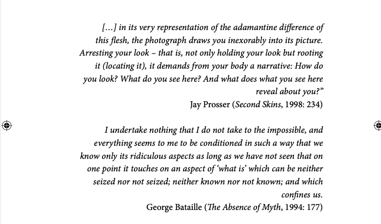
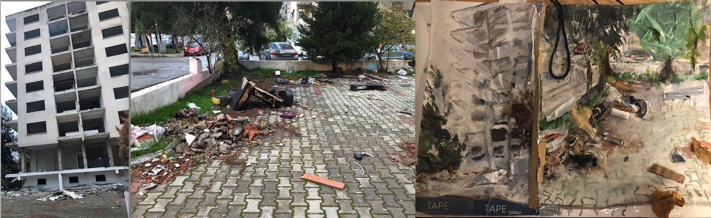

Gürbüz, Temmuz Süreyya. Judith Butler and Film: The Good Egalitarian, The Bad Feminist, and The Ugly Others. Bloomsbury, 2026.
Excerpt from the postscript:
"For the purpose of performative transparency that would ideally communicate my constraints to the reader, I also imagined including visual art, sketches and maps I drew throughout the process [of writing this book]. These visual additions could have been done in different degrees of relationality with regard to the textual content and perhaps provide another sensual field for integrating my precarity into the work.
(2026: 184)
The following panels present several visuals, categorized according to how they helped navigating the writing of the book, or were envisioned either as part of the book itself, each preceded by the opening quotes of the chapters.

"Not one face", digital drawing, 2024. Collaboration with Lizzie Fitzpatrick.
Originally proposed as an alternative cover design for Bloomsbury, this piece draws on photographs from a lecture by Judith Butler to convey a dynamic sense of “movement.”

"Comicbook kinship",
hand drawing, 2024.
"Laughter, then (as in the freeze frame laughter of Divine on the electric chair at the end of Female Trouble), can be a binding tool for us to trace how cultural dilution affects the radical politics of the productions that trouble public culture. For example, it seems as though the cover of the first edition of Gender Trouble (no longer in print) implied that there is a comic-book-like quality to the book – an aesthetic implication that is hardly traceable in the covers of newer editions. The book is more of a cultural item of ‘serious play’ now, for that its visual comicality became highly subtle to a point of invisibility. Lucky for us, however, the title is still the same, carrying the John Waters’s influence along with it, signalling its own cinephilic roots." (80)

"Suited Skin & Skull",
Though not intended for visual inclusion in the book, the work emerged directly from the process of writing this chapter, which questions the documentary genre’s claim to granting visibility to bodies. The pairing of two large photographic prints of these “model” items acts as a stand-in for the physical display, while a mixed-media painting of the same pairing remains in progress.
"Suited Skin & Skull",
Photographic print, 2024.
Though not intended for visual inclusion in the book, the work emerged directly from the process of writing this chapter, which questions the documentary genre’s claim to granting visibility to bodies. The pairing of two large photographic prints of these “model” items acts as a stand-in for the physical display, while a mixed-media painting of the same pairing remains in progress.

"Drop", Photography and mixed-media painting, 2025.
The work pairs photographs of two earthquake sites in Izmir, Turkey, with watercolor paintings of the same locations, reflecting on the tragedy of collapsed buildings and the impossibility of fully capturing such experiences. Found materials, such as tobacco filters, plastic, cardboard, and metal are designed to provide a familiarity and embrace aesthetics that connote negative experiences. Experiencing the catastrophe from afar, yet remaining affected by it, inevitably shaped my approach to writing this chapter.